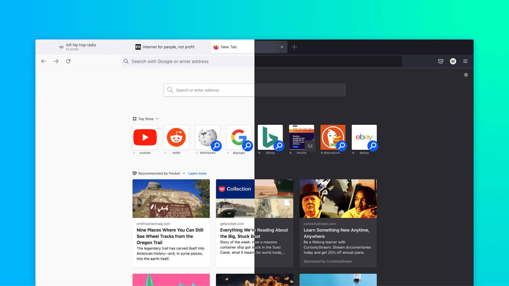
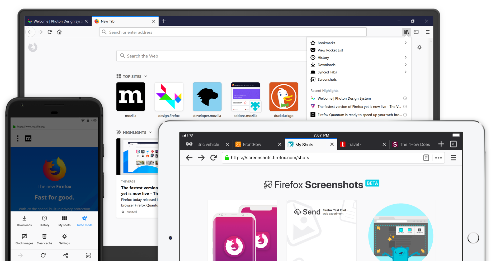
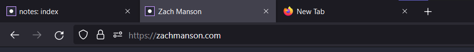

Styling Firefox Proton to resemble Firefox Photon.
Originally tested on Firefox 91, confirmed working on Firefox 104.
Firefox Proton 
Firefox Photon 
Firefox Proton brought many lovely features, but I deeply prefer the Photon tab design. Luckily, Proton supports applying CSS styling to window elements like the tab bar.
- Open
about:config - Find for
toolkit.legacyUserProfileCustomizations.stylesheets, set its value to true. - Open
about:supportand go to the directory marked "Profile Directory" or "Profile Folder". - Create file
<profile directory>/chrome/userChrome.csswith custom stylesheet, e.g.
.tab-background {
border-radius: 0px 0px !important;
margin-bottom: 0px !important;
margin-top: 0px !important;
}
.tabbrowser-tab:not([selected=true]):not([multiselected=true]) .tab-background {
background-color: color-mix(in srgb, currentColor 0%, transparent);
}
- Restart Firefox

Links
Source : https://superuser.com/questions/1653533/how-to-switch-back-to-firefox-old-style-of-tabs/1669549#1669549